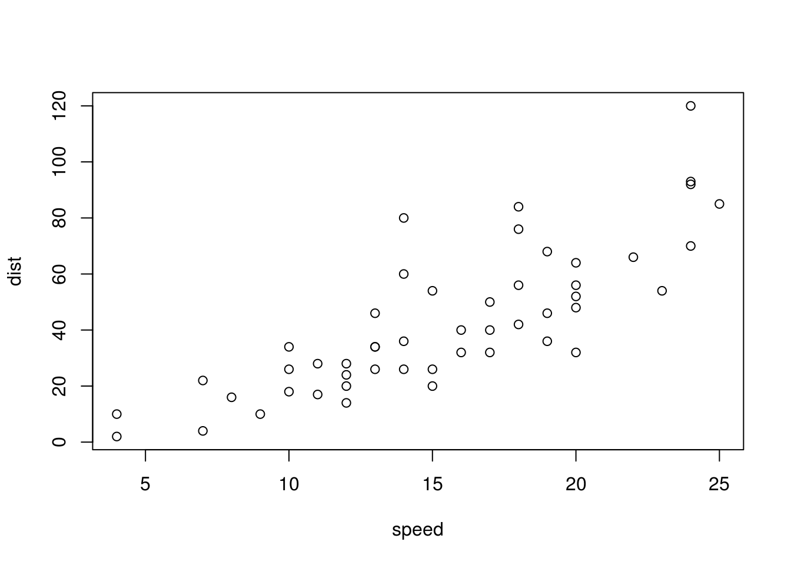
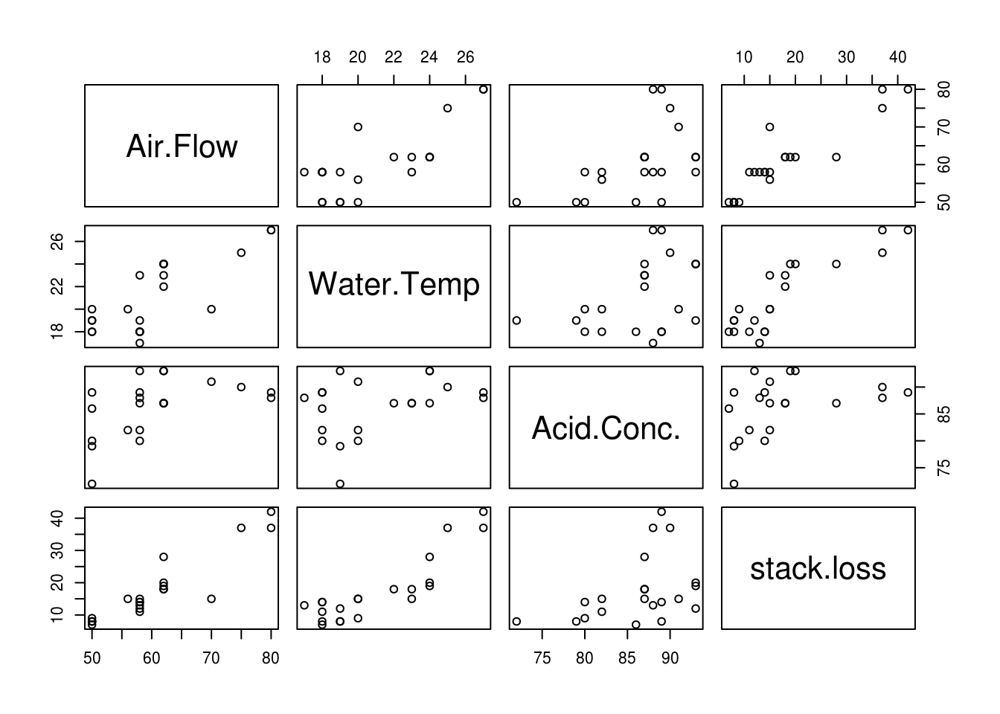

Modelos lineares
Modelo linear tradicional
Considerando um modelo linear com uma variável resposta e apenas um preditor linear, temos que
\[ Y_i = \beta_0 + \beta_1 X_i + \epsilon_i\, \qquad i = 1, \ldots, n \]
onde:
- \(Y_i\) é o valor da variável resposta da \(i\)-ésima observação
- \(\beta_0\) e \(\beta_1\) são parâmetros desconhecidos
- \(X_i\) é o valor do preditor da \(i\)-ésima observação (uma constante conhecida)
- \(\epsilon_i\) é o erro aleatório (devido ao acaso) com \(E(\epsilon_i) = 0\), e \(V(\epsilon_i) = \sigma^2\). Além disso, \(\epsilon_i\) e \(\epsilon_j\) são não correlacionados, ou seja, \(Cov(\epsilon_i, \epsilon_j) = 0, \forall\, i, j; i \neq j\)
Considerações importantes:
- A variável resposta \(Y_i\) é a soma de dois componentes: (1) um termo constante \(\beta_0 + \beta_1 X_i\), e (2) um termo aleatório \(\epsilon_i\). Portanto, \(Y_i\) é uma variável aleatória.
- Como \(E(\epsilon_i) = 0\), \[ \begin{align} E(Y_i) &= E(\beta_0 + \beta_1 X_i + \epsilon_i) \\ &= \beta_0 + \beta_1 X_i + E(\epsilon_i) \\ &= \beta_0 + \beta_1 X_i \end{align} \]
- A variável resposta \(Y_i\) “desvia” da função de regressão por uma quantidade \(\epsilon_i\)
- Os erros aleatórios possuem variância constante \(\sigma^2\). Segue-se que dessa forma, a variável \(Y_i\) possui a mesma variância \[ \begin{align} Var(Y_i) &= Var(\beta_0 + \beta_1 X_i + \epsilon_i) \\ &= Var(\epsilon_i) \\ &= \sigma^2 \end{align} \] Portanto, o modelo assume que \(Y\) possui a mesma variâncias, independente do nível da variável \(X\).
- Como os erros \(\epsilon_i\) e \(\epsilon_j\) são não correlacionados, as variáveis \(Y_i\) e \(Y_j\) também são não correlacionadas (i.e independentes)
Métodos de estimação
Para encontrar as estimativas dos parâmetros desconhecidos \(\beta_0\) e \(\beta_1\), podemos usar o método da máxima verossimilhança ou o método dos mínimos quadrados. Aqui iremos abordar somento o último.
O método dos mínimos quadrados consiste em encontrar os estimadores que minimizam a diferença entre uma observação \(Y_i\) e seu valor esperado \(E(Y_i)\), ou seja, \[ \begin{align} Y_i &- E(Y_i) \\ Y_i &- (\beta_0 + \beta_1 X_i) \end{align} \] Em particular, o método requer a soma dos \(n\) desvios ao quadrado, ou seja, \[ Q = \sum_{i=1}^{n} (Y_i - \beta_0 - \beta_1 X_i)^2 \]
De acordo com o método dos mínimos quadrados, as estimativas de \(\beta_0\) e \(\beta_1\) são obtidas quando o critério \(Q\) é mínimo. Lembre-se que para encontrar o mínimo de uma função, fazemos sua derivada (parcial, em relação à cada parâmetro), e igualamos o resultado a zero. Ao derivar \(Q\) em relação à \(\beta_0\) e \(\beta_1\), temos as seguintes equações \[ \begin{align} \frac{\partial Q}{\beta_0} &= -2 \Sigma (Y_i - \beta_0 - \beta_1 X_i) \\ \frac{\partial Q}{\beta_1} &= -2 \Sigma X_i (Y_i - \beta_0 - \beta_1 X_i) \end{align} \]
Igualando cada expressão a zero e expandindo os somatórios temos \[ \begin{align} n \hat\beta_0 + \hat\beta_1 \Sigma X_i &= \Sigma Y_i \\ \hat\beta_0 \Sigma X_i + \hat\beta_1 \Sigma X_i^2 &= \Sigma X_i Y_i \end{align} \] que é chamado de sistema de equações normais, e \(\hat\beta_0\) e \(\hat\beta_1\) são as estimativas pontuais para \(\beta_0\) e \(\beta_1\), respectivamente. Isolando esses termos, encontramos as soluções: \[ \begin{align} \hat\beta_1 &= \frac{\Sigma (X_i - \bar{X})(Y_i - \bar{Y})} {\Sigma (X_i - \bar{X})^2} \\ \hat\beta_0 &= \bar{Y} - \hat\beta_1 \bar{X} \end{align} \] que são as chamadas soluções de mínimos quadrados.
Resíduos
O \(i\)-ésimo resíduo é a diferença entre o valor observado \(Y_i\) e seu correspondente valor predito \(\hat{Y}_i\), onde \[ \hat{Y}_i = \hat\beta_0 + \hat\beta_1 X_i\, \qquad i = 1, \ldots, n \] é o valor ajustado ou predito para cada nível \(X\) da variável preditora.
Sendo assim, o resíduo \(e_i\) é \[ \begin{align} e_i &= Y_i - \hat{Y}_i \\ &= Y_i - (\hat\beta_0 + \hat\beta_1 X_i) \\ &= Y_i - \hat\beta_0 - \hat\beta_1 X_i \end{align} \]
É importante notar a diferença entre \[ \epsilon_i = Y_i - E(Y_i) \] e \[ e_i = Y_i - \hat{Y}_i \] O primeiro envolve a diferença entra \(Y_i\) e a verdadeira equação de regressão, que é desconhecida. O segundo é a diferença entre \(Y_i\) e o valor ajustado \(\hat{Y}_i\) da equação de regressão estimada, ou seja, é conhecido.
Modelo linear na forma matricial
O modelo linear usual é definido por
\[ \mathbf{Y} = \mathbf{X}\boldsymbol{\beta} + \boldsymbol{\epsilon} \]
A estimativa de \(\boldsymbol{\hat\beta}\) pelo método de mínimos quadrados (MQ) é determinada pela minimização da soma de quadrados dos erros
\[ \min{\{\boldsymbol{\epsilon'\epsilon}\}} = \min{\{(\mathbf{Y} - \mathbf{X}\boldsymbol{\beta})'(\mathbf{Y} - \mathbf{X}\boldsymbol{\beta})\}} \]
Seja
\[ \begin{align} Q &= (\mathbf{Y} - \mathbf{X}\boldsymbol{\beta})'(\mathbf{Y} - \mathbf{X}\boldsymbol{\beta}) \\ &= \mathbf{Y'Y} - \boldsymbol{\beta'}\mathbf{X'Y} - \mathbf{Y'X}\boldsymbol{\beta} + \boldsymbol{\beta'} \mathbf{X'X} \boldsymbol{\beta} \end{align} \]
Note que \(\boldsymbol{\beta'}\mathbf{X'Y}\) é \(1 \times 1\), portanto é igual a sua transposta, ou seja, \((\mathbf{Y'X}\boldsymbol{\beta})' = \boldsymbol{\beta'}\mathbf{X'Y}\). Portanto
\[ Q = \mathbf{Y'Y} - 2\boldsymbol{\beta'}\mathbf{X'Y} + \boldsymbol{\beta'} \mathbf{X'X}\boldsymbol{\beta} \]
Para encontrar os valores de \(\boldsymbol{\beta}\) que minimizam \(Q\), fazemos as derivadas parciais em relação à \(\boldsymbol{\beta}\)
\[ \frac{\partial Q}{\partial \boldsymbol{\beta}} = \mathbf{0} - 2\mathbf{X'Y} + 2\mathbf{X'X}\boldsymbol{\beta} \]
Igualando o resultado a zero, obtemos o sistema de equações normais
\[ \mathbf{X'X}\boldsymbol{\hat\beta} = \mathbf{X'Y} \]
Note que (para um modelo considerando apenas dois parâmetros, \(\hat\beta_0\) e \(\hat\beta_1\)):
\[ \begin{align} \mathbf{X'X}\boldsymbol{\hat\beta} &= \mathbf{X'Y} \\ \begin{bmatrix} n & \Sigma X_i \\ \Sigma X_i & \Sigma X_i^2 \end{bmatrix} \begin{bmatrix} \hat\beta_0 \\ \hat\beta_1 \\ \end{bmatrix} &= \begin{bmatrix} \Sigma Y_i \\ \Sigma X_i Y_i \end{bmatrix} \\ \begin{bmatrix} n \hat\beta_0 + \hat\beta_1 \Sigma X_i \\ \hat\beta_0 \Sigma X_i + \hat\beta_1 \Sigma X_i^2 \end{bmatrix} &= \begin{bmatrix} \Sigma Y_i \\ \Sigma X_i Y_i \end{bmatrix} \end{align} \]
que é o sistema de equações normais usual para modelos de regressão com dois parâmetros.
Para obter a solução para a estimativa dos parâmetros envolvidos, nós pré-multiplicamos ambos os lados da equação pela inversa de \(\mathbf{X'X}\), assumindo que ela existe:
\[ (\mathbf{X'X})^{-1}\mathbf{X'X}\boldsymbol{\hat\beta} = (\mathbf{X'X})^{-1}\mathbf{X'Y} \]
Sabendo que \((\mathbf{X'X})^{-1}\mathbf{X'X} = \mathbf{I}\) e \(\mathbf{I}\boldsymbol{\hat\beta} = \boldsymbol{\hat\beta}\), então
\[ \boldsymbol{\hat\beta} = (\mathbf{X'X})^{-1}\mathbf{X'Y} \]
Observação: essa solução só será possível quando \(\mathbf{X'X}\) é de posto completo, é não singular e admite inversa.
Os valores ajustados (ou preditos) pelo modelo serão então estimados por
\[ \mathbf{\hat{Y}} = \mathbf{X}\boldsymbol{\hat\beta} \]
Mas podemos escrever essa equação para \(\mathbf{\hat{Y}}\), usando a expressão para \(\boldsymbol{\hat\beta}\),
\[ \begin{align} \mathbf{\hat{Y}} &= \mathbf{X}(\mathbf{X'X})^{-1}\mathbf{X'Y} \\ &= \mathbf{HY} \end{align} \]
Onde
\[ \mathbf{H} = \mathbf{X}(\mathbf{X'X})^{-1}\mathbf{X'} \\ \]
é chamada de matriz chapéu, ou matriz núcleo, ou matriz de projeção ortogonal. Como veremos mais adiante, esta matriz é de fundamental importância em modelos lineares. A matriz \(\mathbf{H}\) possui duas propriedades fundamentais: é simétrica e idempotente, ou seja,
\[ \mathbf{H}\mathbf{H} = \mathbf{H} \]
Os resíduos também podem ser calculados através da matriz \(\mathbf{H}\), pois
\[ \begin{align} \mathbf{e} &= \mathbf{Y} - \mathbf{\hat{Y}} \\ &= \mathbf{Y} - \mathbf{X}\boldsymbol{\hat\beta} \\ &= \mathbf{Y} - \mathbf{HY} \\ &= (\mathbf{I} - \mathbf{H})\mathbf{Y} \end{align} \]
Onda a matriz \((\mathbf{I} - \mathbf{H})\) também é simétrica e idempotente. Com isso, deve-se esperar que a matriz \(\mathbf{H}\) também possua um papel importante no diagnóstico dos modelos baseado nos resíduos.
Modelo de regressão linear simples
Modela a relação entre duas variáveis quantitativas.
Especificando o modelo:
\[ y_i = \beta_0 + \beta_1 x_i + \epsilon_i, \qquad i = 1, \ldots, n \]
\[ \mathbf{y} = \mathbf{X}\boldsymbol{\beta} + \boldsymbol{\epsilon} \]
\[ \begin{bmatrix} y_1 \\ y_2 \\ \vdots \\ y_n \end{bmatrix}%_{n \times 1} = \begin{bmatrix} 1 & x_{1} \\ 1 & x_{2} \\ \vdots & \vdots \\ 1 & x_{n} \end{bmatrix}%_{n \times (k+1)} \begin{bmatrix} \beta_0 \\ \beta_1 \end{bmatrix}%_{(k+1) \times 1} + \begin{bmatrix} \epsilon_1 \\ \epsilon_2 \\ \vdots \\ \epsilon_n \end{bmatrix}%_{n \times 1} \]
Exemplo no R
##----------------------------------------------------------------------
## Conjunto de dados
data(cars)
## Estrutura
str(cars)'data.frame': 50 obs. of 2 variables:
$ speed: num 4 4 7 7 8 9 10 10 10 11 ...
$ dist : num 2 10 4 22 16 10 18 26 34 17 ...## Gráfico de dispersão
plot(dist ~ speed, data = cars)
##----------------------------------------------------------------------
## Como x têm níveis quantitativos, ajustamos uma função
m0 <- lm(dist ~ speed, data = cars)
coef(m0)(Intercept) speed
-17.579095 3.932409 ##----------------------------------------------------------------------
## Fazendo estimação "na mão"
## Matriz do modelo
(X <- cbind(1, cars$speed)) [,1] [,2]
[1,] 1 4
[2,] 1 4
[3,] 1 7
[4,] 1 7
[5,] 1 8
[6,] 1 9
[7,] 1 10
[8,] 1 10
[9,] 1 10
[10,] 1 11
[11,] 1 11
[12,] 1 12
[13,] 1 12
[14,] 1 12
[15,] 1 12
[16,] 1 13
[17,] 1 13
[18,] 1 13
[19,] 1 13
[20,] 1 14
[21,] 1 14
[22,] 1 14
[23,] 1 14
[24,] 1 15
[25,] 1 15
[26,] 1 15
[27,] 1 16
[28,] 1 16
[29,] 1 17
[30,] 1 17
[31,] 1 17
[32,] 1 18
[33,] 1 18
[34,] 1 18
[35,] 1 18
[36,] 1 19
[37,] 1 19
[38,] 1 19
[39,] 1 20
[40,] 1 20
[41,] 1 20
[42,] 1 20
[43,] 1 20
[44,] 1 22
[45,] 1 23
[46,] 1 24
[47,] 1 24
[48,] 1 24
[49,] 1 24
[50,] 1 25## Vetor de observações
(y <- matrix(cars$dist, ncol = 1)) [,1]
[1,] 2
[2,] 10
[3,] 4
[4,] 22
[5,] 16
[6,] 10
[7,] 18
[8,] 26
[9,] 34
[10,] 17
[11,] 28
[12,] 14
[13,] 20
[14,] 24
[15,] 28
[16,] 26
[17,] 34
[18,] 34
[19,] 46
[20,] 26
[21,] 36
[22,] 60
[23,] 80
[24,] 20
[25,] 26
[26,] 54
[27,] 32
[28,] 40
[29,] 32
[30,] 40
[31,] 50
[32,] 42
[33,] 56
[34,] 76
[35,] 84
[36,] 36
[37,] 46
[38,] 68
[39,] 32
[40,] 48
[41,] 52
[42,] 56
[43,] 64
[44,] 66
[45,] 54
[46,] 70
[47,] 92
[48,] 93
[49,] 120
[50,] 85## X'
Xt <- t(X)
## X'X
(XtX <- Xt %*% X) [,1] [,2]
[1,] 50 770
[2,] 770 13228## (X'X)^-1
solve(XtX) [,1] [,2]
[1,] 0.19310949 -0.011240876
[2,] -0.01124088 0.000729927## X'y
(Xty <- Xt %*% y) [,1]
[1,] 2149
[2,] 38482## Ajuste por mínimos quadrados
## (X'X)^-1 X'y
solve(XtX) %*% Xty [,1]
[1,] -17.579095
[2,] 3.932409Modelo de regressão linear múltipla
Modela a relação entre uma variável resposta e duas ou mais variáveis quantitativas.
Especificando o modelo:
\[ y_{ij} = \beta_0 + \beta_1 x_{i1} + \beta_2 x_{i2} + \cdots + \beta_k x_{ik} + \epsilon_i, \qquad i = 1, \ldots, n,\, j = 1, \ldots, k \]
\[ \mathbf{y} = \mathbf{X}\boldsymbol{\beta} + \boldsymbol{\epsilon} \]
\[ \begin{bmatrix} y_1 \\ y_2 \\ \vdots \\ y_n \end{bmatrix}%_{n \times 1} = \begin{bmatrix} 1 & x_{11} & x_{12} & \cdots & x_{1k} \\ 1 & x_{21} & x_{22} & \cdots & x_{2k} \\ \vdots & \vdots & \vdots & \ddots & \vdots \\ 1 & x_{n1} & x_{n2} & \cdots & x_{nk} \end{bmatrix}%_{n \times (k+1)} \begin{bmatrix} \beta_0 \\ \beta_1 \\ \vdots \\ \beta_k \end{bmatrix}%_{(k+1) \times 1} + \begin{bmatrix} \epsilon_1 \\ \epsilon_2 \\ \vdots \\ \epsilon_n \end{bmatrix}%_{n \times 1} \]
Exemplo no R
##----------------------------------------------------------------------
## Conjunto de dados
data(stackloss)
## Estrutura
str(stackloss)'data.frame': 21 obs. of 4 variables:
$ Air.Flow : num 80 80 75 62 62 62 62 62 58 58 ...
$ Water.Temp: num 27 27 25 24 22 23 24 24 23 18 ...
$ Acid.Conc.: num 89 88 90 87 87 87 93 93 87 80 ...
$ stack.loss: num 42 37 37 28 18 18 19 20 15 14 ...## Gráfico de dispersão
plot(stackloss)
##----------------------------------------------------------------------
## Como x têm níveis quantitativos, ajustamos uma função
m1 <- lm(stack.loss ~ Air.Flow + Water.Temp + Acid.Conc.,
data = stackloss)
coef(m1)(Intercept) Air.Flow Water.Temp Acid.Conc.
-39.9196744 0.7156402 1.2952861 -0.1521225 ##----------------------------------------------------------------------
## Fazendo estimação "na mão"
## Matriz do modelo
(X <- with(stackloss,
cbind(1, Air.Flow, Water.Temp, Acid.Conc.))) Air.Flow Water.Temp Acid.Conc.
[1,] 1 80 27 89
[2,] 1 80 27 88
[3,] 1 75 25 90
[4,] 1 62 24 87
[5,] 1 62 22 87
[6,] 1 62 23 87
[7,] 1 62 24 93
[8,] 1 62 24 93
[9,] 1 58 23 87
[10,] 1 58 18 80
[11,] 1 58 18 89
[12,] 1 58 17 88
[13,] 1 58 18 82
[14,] 1 58 19 93
[15,] 1 50 18 89
[16,] 1 50 18 86
[17,] 1 50 19 72
[18,] 1 50 19 79
[19,] 1 50 20 80
[20,] 1 56 20 82
[21,] 1 70 20 91## Vetor de observações
(y <- matrix(stackloss$stack.loss, ncol = 1)) [,1]
[1,] 42
[2,] 37
[3,] 37
[4,] 28
[5,] 18
[6,] 18
[7,] 19
[8,] 20
[9,] 15
[10,] 14
[11,] 14
[12,] 13
[13,] 11
[14,] 12
[15,] 8
[16,] 7
[17,] 8
[18,] 8
[19,] 9
[20,] 15
[21,] 15## X'
Xt <- t(X)
## X'X
(XtX <- Xt %*% X) Air.Flow Water.Temp Acid.Conc.
21 1269 443 1812
Air.Flow 1269 78365 27223 109988
Water.Temp 443 27223 9545 38357
Acid.Conc. 1812 109988 38357 156924## (X'X)^-1
solve(XtX) Air.Flow Water.Temp Acid.Conc.
13.45272669 0.0273387119 -6.196112e-02 -1.593550e-01
Air.Flow 0.02733871 0.0017288737 -3.470791e-03 -6.790801e-04
Water.Temp -0.06196112 -0.0034707913 1.287542e-02 9.959521e-07
Acid.Conc. -0.15935503 -0.0006790801 9.959521e-07 2.322167e-03## X'y
(Xty <- Xt %*% y) [,1]
368
Air.Flow 23953
Water.Temp 8326
Acid.Conc. 32189## Ajuste por mínimos quadrados
## (X'X)^-1 X'y
solve(XtX) %*% Xty [,1]
-39.9196744
Air.Flow 0.7156402
Water.Temp 1.2952861
Acid.Conc. -0.1521225Modelo de Análise de Variância (ANOVA)
O interesse é e comparar diversas populações, ou diversas condições de um experimento.
Modelos de ANOVA podem ser considerados como modelos lineares de valores restritos de \(x\), frequentemente 0 para indicar ausência de um nível, e 1 para indicar presença de um nível.
Especificando o modelo para um fator com 2 níveis (\(i = 1, 2 = k\)) e 3 repetições (\(j = 1,2,3 = r\)):
\[ y_{ij} = \mu + \alpha_i + \epsilon_{ij}, \qquad i = 1, 2 \quad j = 1,2,3 \]
Onde \(\mu\) é a média geral das observações, \(\alpha_i\) é o efeito adicional na média geral para o nível \(i\) do tratamento, e \(\epsilon_{ij}\) é o erro aleatório associado à cada observação.
O modelo na forma matricial é definido por:
\[ \mathbf{y} = \mathbf{X}\boldsymbol{\beta} + \boldsymbol{\epsilon} \]
\[ \begin{bmatrix} y_{11} \\ y_{12} \\ y_{13} \\ y_{21} \\ y_{22} \\ y_{23} \end{bmatrix}%_{n \times 1} = \begin{bmatrix} 1 & 1 & 0 \\ 1 & 1 & 0 \\ 1 & 1 & 0 \\ 1 & 0 & 1 \\ 1 & 0 & 1 \\ 1 & 0 & 1 \end{bmatrix}%_{n \times (k+1)} \begin{bmatrix} \mu \\ \alpha_1 \\ \alpha_2 \end{bmatrix}%_{(k+1) \times 1} + \begin{bmatrix} \epsilon_{11} \\ \epsilon_{12} \\ \epsilon_{13} \\ \epsilon_{21} \\ \epsilon_{22} \\ \epsilon_{23} \end{bmatrix}%_{n \times 1} \]
Qual o problema com esse modelo, da forma como ele está definido?
A matriz \(\mathbf{X}\) é \(6 \times 3\) e de posto 2, porque a primeira coluna é igual à soma da segunda e da terceira colunas, que são linearmente independentes.
Como \(\mathbf{X}\) não tem posto completo, os parâmetros \(\mu\), \(\alpha_1\) e \(\alpha_2\) não podem ser estimados por \(\boldsymbol{\hat\beta} = (\mathbf{X'X})^{-1}\mathbf{X'y}\) porque a inversa de \(\mathbf{X'X}\) não existe (i.e a matriz é singular).
Por isso, modelos de ANOVA são também chamados de modelos de posto incompleto.
Com 3 parâmetros a seren estimados e \(posto(\mathbf{X}) = 2\) o modelo é dito superparametrizado.
Exemplo no R
##----------------------------------------------------------------------
## Fator com 2 níveis (k) e 3 repetições (r)
k <- 2
r <- 3
fator <- factor(rep(c("A", "B"), each = r))
## Cria a matriz do modelo sem nenhuma restrição
X <- matrix(0, nrow = k*r, ncol = k)
X[cbind(seq_along(fator), fator)] <- 1
(X <- cbind(1, X)) [,1] [,2] [,3]
[1,] 1 1 0
[2,] 1 1 0
[3,] 1 1 0
[4,] 1 0 1
[5,] 1 0 1
[6,] 1 0 1## X'
Xt <- t(X)
## X'X
(XtX <- Xt %*% X) [,1] [,2] [,3]
[1,] 6 3 3
[2,] 3 3 0
[3,] 3 0 3## (X'X)^-1
solve(XtX)Error in solve.default(XtX): Lapack routine dgesv: system is exactly singular: U[3,3] = 0Como podemos ver nesse exemplo, a matriz \(\mathbf{X}\) sendo de posto incompleto é singular e não invertível.
Algumas abordagens para remediar o problema de superparametrização:
- Redefinir o modelo com 2 novos parâmetros que sejam únicos = reparametrização = modelo de médias de caselas (sem intercepto)
- Restringir os parâmetros (várias formas)
- Combinar linearmente os parâmetros (várias formas)
Redefinindo o modelo
Usando a abordagem 1 acima podemos redefinir o modelo para que ele possua 2 parâmetros, fazendo com que a matriz \(\mathbf{X}\) tenha posto completo, e por consequência seja invertível.
Uma forma de redefinir esse modelo seria assumir que
\[ \mu_{ij} = \mu + \alpha_i \]
Portanto o modelo se resumiria a
\[ \begin{align} y_{ij} &= \mu + \alpha_i + \epsilon_{ij} \\ &= \mu_{ij} + \epsilon_{ij} \end{align} \]
Dessa forma, assumindo o mesmo exemplo com \(i = 1,2\) níveis e \(j = 1,2,3\) repetições, temos um modelo com apenas dois parâmetros a serem estimados: \(\mu_1\) e \(\mu_2\), que agora representam o efeito médio do tratamento após a aplicação dos níveis 1 e 2, respectivamente.
O modelo na forma matricial fica:
\[ \mathbf{y} = \mathbf{X}\boldsymbol{\beta} + \boldsymbol{\epsilon} \]
\[ \begin{bmatrix} y_{11} \\ y_{12} \\ y_{13} \\ y_{21} \\ y_{22} \\ y_{23} \end{bmatrix}%_{n \times 1} = \begin{bmatrix} 1 & 0 \\ 1 & 0 \\ 1 & 0 \\ 0 & 1 \\ 0 & 1 \\ 0 & 1 \end{bmatrix}%_{n \times (k+1)} \begin{bmatrix} \mu_1 \\ \mu_2 \\ \end{bmatrix}%_{(k+1) \times 1} + \begin{bmatrix} \epsilon_{11} \\ \epsilon_{12} \\ \epsilon_{13} \\ \epsilon_{21} \\ \epsilon_{22} \\ \epsilon_{23} \end{bmatrix}%_{n \times 1} \]
Dessa forma, o posto de \(\mathbf{X}\) é 2 (pois temos duas colunas linearmente independentes), e a matriz é invertível. Usando o mesmo exemplo anterior no R:
##----------------------------------------------------------------------
## A matriz X para o modelo anterior é a mesma, com excessão da primeira
## coluna. Portanto, chamando de X2 essa nova matriz,
(X2 <- X[ , -1]) [,1] [,2]
[1,] 1 0
[2,] 1 0
[3,] 1 0
[4,] 0 1
[5,] 0 1
[6,] 0 1## X'
X2t <- t(X2)
## X'X
(X2tX2 <- X2t %*% X2) [,1] [,2]
[1,] 3 0
[2,] 0 3## (X'X)^-1
solve(X2tX2) [,1] [,2]
[1,] 0.3333333 0.0000000
[2,] 0.0000000 0.3333333Note que nesse caso específico, ficamos com uma matriz diagonal que é facilmente invertida
MASS::fractions(solve(X2tX2)) [,1] [,2]
[1,] 1/3 0
[2,] 0 1/3 Dessa forma, podemos estimar os parâmetros \(\mu_1\) e \(\mu_2\). O modelo como especificado dessa forma é também chamado de modelo de média de caselas.
Restringindo os parâmetros
Usando a abordagem 2 acima, a ideia de restringir os parâmetros tem o mesmo objetivo: reduzir o número de parâmetros a serem estimados de forma que a matriz \(\mathbf{X}\) tenha posto completo e seja invertível.
Existem várias formas de restringir os parâmetros, como por exemplo, assumir que um determinado parâmetro é fixo, e estimar os demais desconhecidos. As restrições mais comuns, por serem mais fáceis de serem interpretadas, são:
- Assumir que a soma de todos os efeitos é igual a zero, ou seja, \(\sum_{i=1}^{k} \alpha_i = 0\)
- Assumir que o primeiro nível do fator é zero, ou seja, \(\alpha_1 = 0\)
- Assumir que o último nível do fator é zero, ou seja, \(\alpha_k = 0\)
Estas restrições reduzem o número de parâmetros a serem estimados. Como todas elas impõem algum tipo de relação entre os parâmetros, estas restrições também são chamadas de contrastes.
Soma zero
O contraste do tipo soma zero, assume que a soma de todos os efeitos é igual a zero. Continuando com o exemplo anterior, onde temos um fator com 2 níveis e 3 repetições, o contraste é
\[ \sum_{i=1}^{k} \alpha_i = 0 \quad \Rightarrow \quad \alpha_1 + \alpha_2 = 0 \]
Como
\[ \alpha_1 + \alpha_2 = 0 \quad \Rightarrow \quad \alpha_2 = -\alpha_1 \]
então o modelo fica
\[ y_{1j} = \mu + \alpha_1 + \epsilon_{1j} \\ y_{2j} = \mu - \alpha_1 + \epsilon_{2j} \]
E na forma matricial
\[ \mathbf{y} = \mathbf{X}\boldsymbol{\beta} + \boldsymbol{\epsilon} \]
\[ \begin{bmatrix} y_{11} \\ y_{12} \\ y_{13} \\ y_{21} \\ y_{22} \\ y_{23} \end{bmatrix}%_{n \times 1} = \begin{bmatrix} 1 & 1 \\ 1 & 1 \\ 1 & 1 \\ 1 & -1 \\ 1 & -1 \\ 1 & -1 \end{bmatrix}%_{n \times (k+1)} \begin{bmatrix} \mu \\ \alpha_1 \\ \end{bmatrix}%_{(k+1) \times 1} + \begin{bmatrix} \epsilon_{11} \\ \epsilon_{12} \\ \epsilon_{13} \\ \epsilon_{21} \\ \epsilon_{22} \\ \epsilon_{23} \end{bmatrix}%_{n \times 1} \]
Dessa forma, o posto de \(\mathbf{X}\) é 2 (pois temos duas colunas linearmente independentes), e a matriz é invertível. Usando o mesmo exemplo anterior no R:
##----------------------------------------------------------------------
## A matriz X para o modelo anterior é a diferença entra as duas colunas
## finais da matriz X original. Portanto, chamando de X3 essa nova
## matriz,
(X3 <- cbind(X[, 1], X[, 2] - X[, 3])) [,1] [,2]
[1,] 1 1
[2,] 1 1
[3,] 1 1
[4,] 1 -1
[5,] 1 -1
[6,] 1 -1## X'
X3t <- t(X3)
## X'X
(X3tX3 <- X3t %*% X3) [,1] [,2]
[1,] 6 0
[2,] 0 6## (X'X)^-1
solve(X3tX3) [,1] [,2]
[1,] 0.1666667 0.0000000
[2,] 0.0000000 0.1666667Note que nesse caso específico, ficamos com uma matriz diagonal que é facilmente invertida
MASS::fractions(solve(X3tX3)) [,1] [,2]
[1,] 1/6 0
[2,] 0 1/6 Dessa forma, podemos estimar os parâmetros \(\mu\) e \(\alpha_1\). Note que, pela definição da matriz do modelo, o parâmetro \(\mu\) é a média geral das observações, e o parâmetro \(\alpha_1\) é o acréscimo (ou decréscimo) associado a cada nível do tratamento em relação à média geral. Por exemplo, os efeitos (médias) de cada tratamento serão dados por
\[ \mu_{1j} = \mu + \alpha_1 \\ \mu_{2j} = \mu - \alpha_1 \]
Primeiro nível zero
Assumir que o primeiro nível do fator é igual a zero implica em assumir que um parâmetro do modelo é conhecido, portanto não precisa ser estimado, e assim se reduz o número de parâmetros. Do exemplo anterior, assumindo
\[ \alpha_1 = 0 \]
o modelo fica
\[ y_{1j} = \mu + 0 + \epsilon_{1j} \\ y_{2j} = \mu + \alpha_2 + \epsilon_{2j} \]
E na forma matricial
\[ \mathbf{y} = \mathbf{X}\boldsymbol{\beta} + \boldsymbol{\epsilon} \]
\[ \begin{bmatrix} y_{11} \\ y_{12} \\ y_{13} \\ y_{21} \\ y_{22} \\ y_{23} \end{bmatrix}%_{n \times 1} = \begin{bmatrix} 1 & 0 \\ 1 & 0 \\ 1 & 0 \\ 1 & 1 \\ 1 & 1 \\ 1 & 1 \end{bmatrix}%_{n \times (k+1)} \begin{bmatrix} \mu \\ \alpha_2 \\ \end{bmatrix}%_{(k+1) \times 1} + \begin{bmatrix} \epsilon_{11} \\ \epsilon_{12} \\ \epsilon_{13} \\ \epsilon_{21} \\ \epsilon_{22} \\ \epsilon_{23} \end{bmatrix}%_{n \times 1} \]
Dessa forma, o posto de \(\mathbf{X}\) é 2 (pois temos duas colunas linearmente independentes), e a matriz é invertível. Usando o mesmo exemplo anterior no R:
##----------------------------------------------------------------------
## A matriz X para o modelo anterior é igual a matriz X original, menos
## a segunda coluna. Portanto, chamando de X4 essa nova matriz,
(X4 <- X[, -2]) [,1] [,2]
[1,] 1 0
[2,] 1 0
[3,] 1 0
[4,] 1 1
[5,] 1 1
[6,] 1 1## X'
X4t <- t(X4)
## X'X
(X4tX4 <- X4t %*% X4) [,1] [,2]
[1,] 6 3
[2,] 3 3## (X'X)^-1
solve(X4tX4) [,1] [,2]
[1,] 0.3333333 -0.3333333
[2,] -0.3333333 0.6666667Note que a matriz não é diagonal, mas é invertível. Dessa forma, podemos estimar os parâmetros \(\mu\) e \(\alpha_2\). Pela definição da matriz desse modelo, o parâmetro \(\mu\) é a média do nível 1, pois na primeira equação temos
\[ y_{1j} = \mu + \epsilon_{1j} \quad \Rightarrow \quad \text{E}[y_{1j}] = \mu \]
Como
\[ y_{2j} = \mu + \alpha_2 + \epsilon_{2j} \quad \Rightarrow \quad \text{E}[y_{2j}] = \mu + \alpha_2 = \text{E}[y_{1j}] + \alpha_2 \]
então o parâmetro \(\alpha_2\) deve ser interpretado como a diferença entre a média do nível 1 com o efeito do nível 2 (um contraste). O sinal de \(\alpha_2\) indicará se o efeito do nível 2 é maior (\(+\)) ou menor (\(-\)) do que do nível 1.
Último nível zero
Assumir que o último nível do fator é igual a zero implica em assumir que um parâmetro do modelo é conhecido, portanto não precisa ser estimado, e assim se reduz o número de parâmetros. Do exemplo anterior, assumindo
\[ \alpha_2 = 0 \]
o modelo fica
\[ y_{1j} = \mu + \alpha_1 + \epsilon_{1j} \\ y_{2j} = \mu + 0 + \epsilon_{2j} \]
E na forma matricial
\[ \mathbf{y} = \mathbf{X}\boldsymbol{\beta} + \boldsymbol{\epsilon} \]
\[ \begin{bmatrix} y_{11} \\ y_{12} \\ y_{13} \\ y_{21} \\ y_{22} \\ y_{23} \end{bmatrix}%_{n \times 1} = \begin{bmatrix} 1 & 1 \\ 1 & 1 \\ 1 & 1 \\ 1 & 0 \\ 1 & 0 \\ 1 & 0 \end{bmatrix}%_{n \times (k+1)} \begin{bmatrix} \mu \\ \alpha_1 \\ \end{bmatrix}%_{(k+1) \times 1} + \begin{bmatrix} \epsilon_{11} \\ \epsilon_{12} \\ \epsilon_{13} \\ \epsilon_{21} \\ \epsilon_{22} \\ \epsilon_{23} \end{bmatrix}%_{n \times 1} \]
Dessa forma, o posto de \(\mathbf{X}\) é 2 (pois temos duas colunas linearmente independentes), e a matriz é invertível. Usando o mesmo exemplo anterior no R:
##----------------------------------------------------------------------
## A matriz X para o modelo anterior é igual a matriz X original, menos
## a terceira coluna. Portanto, chamando de X5 essa nova matriz,
(X5 <- X[, -3]) [,1] [,2]
[1,] 1 1
[2,] 1 1
[3,] 1 1
[4,] 1 0
[5,] 1 0
[6,] 1 0## X'
X5t <- t(X5)
## X'X
(X5tX5 <- X5t %*% X5) [,1] [,2]
[1,] 6 3
[2,] 3 3## (X'X)^-1
solve(X5tX5) [,1] [,2]
[1,] 0.3333333 -0.3333333
[2,] -0.3333333 0.6666667Note que a matriz não é diagonal, mas é invertível. Dessa forma, podemos estimar os parâmetros \(\mu\) e \(\alpha_1\). Pela definição da matriz desse modelo, o parâmetro \(\mu\) é a média do nível 2, pois na segunda equação temos
\[ y_{2j} = \mu + \epsilon_{2j} \quad \Rightarrow \quad \text{E}[y_{2j}] = \mu \]
Como
\[ y_{1j} = \mu + \alpha_1 + \epsilon_{1j} \quad \Rightarrow \quad \text{E}[y_{1j}] = \mu + \alpha_1 = \text{E}[y_{2j}] + \alpha_1 \]
então o parâmetro \(\alpha_1\) deve ser interpretado como a diferença entre a média do nível 2 com o efeito do nível 1 (um contraste). O sinal de \(\alpha_1\) indicará se o efeito do nível 1 é maior (\(+\)) ou menor (\(-\)) do que do nível 2.

Este conteúdo está disponível por meio da Licença Creative Commons 4.0